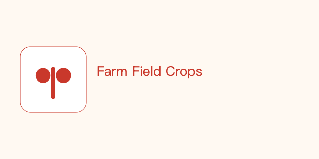

描述该支柱在本体/架构中的定位。
Position of this pillar in the ontology/architecture.
描述该支柱解决的跨职能对齐问题。
Cross-functional alignment solved by this pillar.
描述该支柱的底层逻辑与模型基础。
Underlying logic and model foundation of this pillar.
描述自动化审计、PR流程或安全机制。
Automated audit, PR workflow or security.
描述 LLM/向量计算如何穿透业务逻辑。
How LLM/Vector computation penetrates business logic.
描述 Hub-Spoke 架构或多协议适配能力。
Hub-Spoke architecture or multi-protocol adapters.
描述该场景下的具体架构应用与价值产出。
Specific architectural application and value output.
描述该场景下的跨支柱协同与闭环效果。
Cross-pillar synergy and closed-loop effectiveness.
info@geninit.cn
www.geninit.cn
Follow GeninIT Industrial Visual Language (GIVL) Standards.